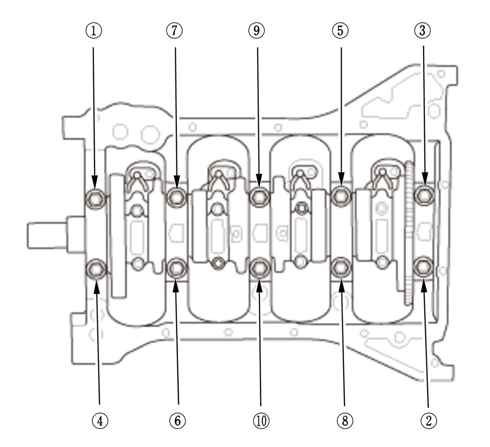
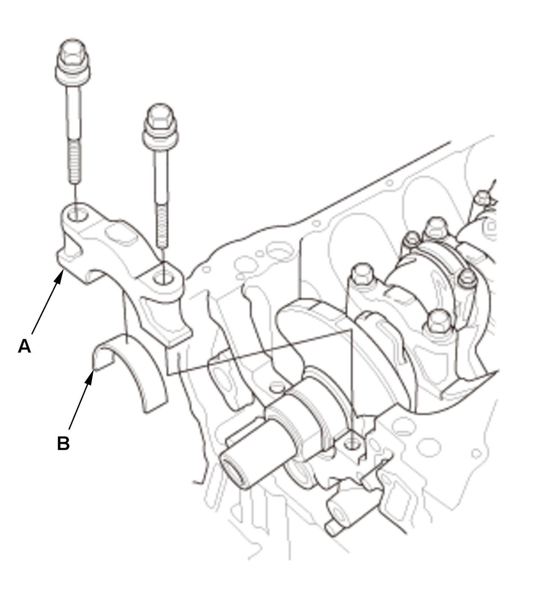

Crankshaft and CKP Pulse Plate Removal, Installation, and Inspection (1.5L Engine): Removal
- Engine - Remove
- Transmission - Remove
- Pressure Plate, Clutch Disc, and Flywheel - Remove (M/T)
- Drive Plate - Remove (CVT)
- Cylinder Head - Remove
- Cam Chain Drive Sprocket - Remove
1. Remove the key (A) and the cam chain drive sprocket (B). - Oil Pan - Remove
- Oil Pump - Remove
- Oil Seal Case - Remove
- Connecting Rod Cap and Bearing Half - Remove
NOTE: Keep all connecting rod caps and connecting rod bearings in order.
- Main Bearing Cap - Remove


Courtesy of HONDA, U.S.A., INC.HONDA, U.S.A., INC.1. Remove the bearing cap bolts. To prevent warpage, loosen the bolts in sequence 1/3 turn at a time; repeat the sequence until all bolts are loosened. 2. Remove the main bearing caps (A) and the main bearings (B). NOTE:
- Check the installed position and direction of the main bearing caps.
- When the main bearing caps are installed, install the main bearing caps as same location and direction of the original them.
- Crankshaft - Remove
1. Lift the crankshaft (A) out of the engine block, being careful not to damage the CKP pulse plate (B). 2. Remove the thrust washers (C).
- CKP Pulse Plate - Remove
NOTE: Check the direction of the key. When the key is installed, install the key as same direction of the original one.